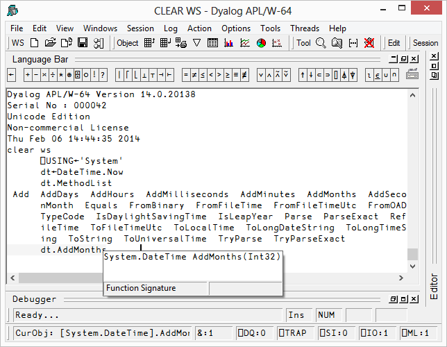
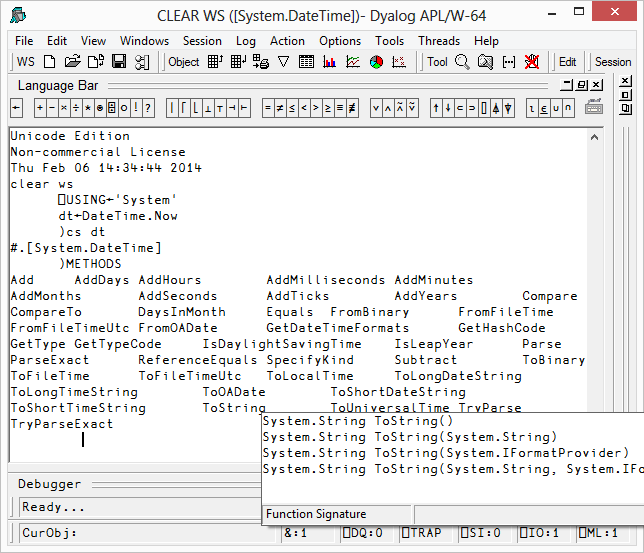

Value Tips can also be used to investigate the syntax of external functions. If you hover over the name of an external function, the Value Tip displays its Function Signature.
For example, in the example below, the mouse is hovered over the external function dt.AddMonths and shows that it requires a single integer as its argument.

Should the external function provide more than one signature, they are all shown in the Value Tip as illustrated below. Here the function ToString has four different overloads.
